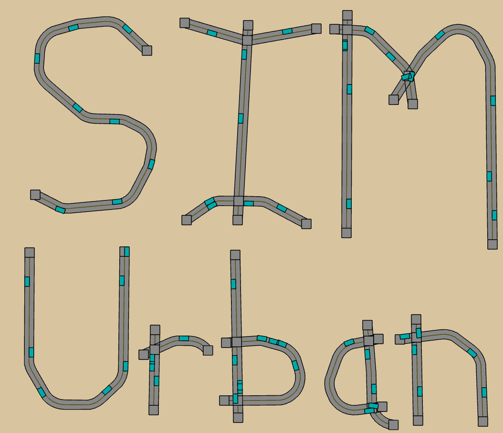

Bryce Works
TODO
- Decouple ICBL from Bryce Works.
- Create Project Pages.
- Add Links.
- Remove stale email addresses.
- Add a funding section.
- Add Aknowledgements for my co-workers.
- Group Projects by category like narrative, animation, digital, computer science outreach.
The Lab
Bryce
The ICBL is led by Bryce Summers. Bryce prefers to go by Bryce, but you can call him an Artist, computer scientist, mathmatician, learning theorist, entrepreneur, project manager, etc based on the context.
I am a Computer Scientist in that I observe the world and then formally create structures that may be logically mutated between each other.
I am an artist in the sense of a cultural and formal educator where I capture observations about the world from myself and others and solidify them into a concrete form that may disseminate the idea of the observation long after I am gone.
I am a game designer in that I try to create desirable methods of acting, usually to some purpose such as solving those problems that inspire people to pursue their field of study.
I am a computer science educator, because I want to transfer the emotions and motivations between generations of people.
I am a procedural historian, I want to discuss the evolution in computational and procedural thinking over the years through archiving the history of computer graphics algorithms and telling narratives about them such as in my algorithm designer animated television show.
I want to make technology and the digital world open to culture and tinkering. Power to the people.
Teaching Philosophy,
I teach computer science and any mathematics that may be of use to computer science.
Linear Algebra, Transportation Network Engineering, Computational Biology and Morphology.
I believe that we solve problems for kindness and for fun. Wanting to communicate known things to people is just as justifiable as trying to solve new problems.
Present my idiology, show students that my idiology may be used for them to bounce their idiology off of.
The students get an 'A' if they satisfy my goal or their goal in the course.
I care more about the process than the final result. The final result serves as a goal and guide for the process. Computer Science Education should focus more on helping students hone their creative processes.
I am the nemesis of apathy.
I am a semiotician, I study the creation of meaning. I am also a semantician and aesthetician.
People want to be enfranchised in the digital age, but when they find themselves barred from the knowledge through emotionally insensitive teaching practices they get their hearts broken.
A secondary goal of mine is to create detailed maps of the networks of cities. This will require detailed data, which is historically only in archives, engineering drawings, and plans for ancient times. Collecting this data would be necessary for my desires.
All projects are the work of Bryce, collaborators, and team members.
Collaborations should be around 2 or so people. One person should be the conceptual lead, one should be the technical or process lead.
Vision
Bryce and the ICBL seeks to broaded the community of people who are excited about mathematical, scientific, technical, and theoretical ideas and empower them to apply the implications of the ideas in their lives and work. We want more people to put their names on their work.
Mission
Bryce and the ICBL creates media products and media production processes used to tell stories about the technical details of ideas.
The emphasis is on visual media, which includes imagery, computer games, graphic novels, animations, animated television series, computational tools, interfaces, mazes, sand castles, coloring books, line drawings, motion graphics, etc. A few projects have also involved tactile media, such as the "Hump Yard" board game about data structures an algorithms that uses custom made toy manipulatives to provide a Computer Science experience that doesn't involve a computer. Some projects also involve auditory media, such as a musical that is currently in the works that seeks to expand popular conceptions of mathematics.
We tend to make these works in small teams, because they allow for better creative direction, but also because we want more sophisticated media to be made with smaller budgets so that educators can use media to help their students without being prohibited by cost.
Current Research
Here are the current main research areas.
| Computer Graphics
| Transportation Engineering
|

|

|
|
We seek to make the mathematical theory and pragmatic application of the field of Computer Graphics as accessible as possible, especially for motivated people who find reading the traditional literature to be frustrating.
Symbiotically, we seek to develop new algorithms and tools to enable to people to express their Computer Graphics understandings and utilize more of the knowledge from the field, such as the use of Halfedge data structures.
|
In collaboration with the NYU Transportation Engineering department, we are creating the Sim Urban computer game about transportation engineering principles. We plan to use the game to better inform the public about the descisions being made in their communities, while also using it to form a new national academic competion, where students can demonstrate their knowledge.
|
Products
While we like writing open source software and sharing our algorithms with the world, we commercialize our products when practically or financially sensible. For instance, we commercialize our physical products such as board games, graphic novels, and coloring books that have real manufacturing, distribution, and storage costs.
We also commercialize projects that would take a prohibitive amount of time or cost to complete, such as competition quality computer games when we don't have a benefactor.
Consultancy
I sometimes write algorithms for new media artists for creative projects and for corporations like Autodesk for creative production tools like Tinkercad My consultancy website is here.
Geography
We are currently located at the Tandon School of Engineering in Brooklyn, NY, USA.
More specifically, we are at the Integrated Digital Media Program.
Join Us
If you want to collaborate, please send an email to Bryce Summers at bryce [at] bryceworks [dot] org
Please use the subject "ICBL_Collaboration_Request", since it will help me see the email. Also, please think about what you would like to contribute to the effort, since collaborations only work out when both parties are able to clearly articulate their motivations for the endeavor. Here are some example reasons that I would want to collaborate with you:
- You are learning Computer Graphics or Transportation Engineering and you would like to critically test and provide feedback on our work. Afterall, if our work doesn't help you learn or provide you with encouraging emotions then we may not be achieving our stated goals.
- You are teaching Computer Graphics with similar goals and you want to synchronize our efforts.
- You are an artist who loves computation and you want to suggest a related tool that would be useful to you. You can also hire Bryce as a consultant if you have some interesting work related to the ICBL endeavors and he has some room left in his schedule.
- You are a Visual Designer who wants to help us present mathematics aesthetically.
- You are an urbanist, transportation engineer, politicial, pedestrian, driver, or interested citizen, who wants to help make Sim Urban a better tool for the community.
- You are a mathmatician or computer scientist who wants to have passionate conversations with more people.
Thank you for visiting the ICBL!